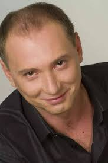

Михаил Жонин Геннадьевич
Стать актером решил в пятом классе. Как рассказывал Михаил, в детстве он был очень активным
парнем и, чтобы куда-то деть свою энергию, начал ходить в «Народный театр». Всегда участвовал в
школьном КВН.
Играет в различных театрах. Переиграл на сцене различные роли. Театр «Ателье 16» (Киев): Жан -
К.Фрешет «Ключа нет» (реж. С.Шекера); Гарсэн - «Песнь 35» по пьесе Жан-Поля Сартра «За закрытыми
дверями» (реж. Игорь Талалаевский). Театр на Левом берегу Днепра: Кочкин - Евгений Унгард
«Веселитесь! Все хорошо!?» (реж. Андрей Билоус). Свободный театр: «Диалог самцов». Театральное
агентство Татьяны Эдемской «ТЕ-АРТ»: «Легкое знакомство», В.Красногоров (реж. С.Семёшкина).
Театр «Актёр»: «Скамейка», А.Гельман (реж. В.Шестопалов).

Награжден Специальным дипломом фестиваля «Добрый театр» - «за уникальный дуэт Кота и Человека» -
за роль в спектакле «Диалог самцов» (совместно с Вячеславом Довженко). Себя считает, прежде
всего, театральным актером. Как говорил Михаил Жонин, актер должен работать именно в театре,
чтобы держать себя в тонусе. «Театр - это кузница, в которой куется актерское мастерство», -
уверен он.
С 2002 года снимается в кино, дебютировав в ленте «Кукла». Далее были успешные работы в картинах
«Новый русский романс» (Серый), «Ангел из Орли» (Михаил Караваев), «Тайна "Святого Патрика"»
(лейтенант Николай Жарков), «Колдовская любовь» (Георгий), «Правила угона» (капитан Пашков),
«Снегирь» (Плутагарь).
Как правило, актеру достаются роли отрицательных персонажей. Таков, например, его опер Игорь
Гнездилов в популярном комедийном детективе «Пёс».
Далее исполнил заметные роли в телесериалах «Гражданин Никто» (Фёдор Коновалов), «Владимирская,
15» (Виктор Астахов), «Последний янычар» (Щука), «По законам военного времени» (Моцный),
«Перекрёстки» (Сергей Гуров).
Сыграл главную роль в медицинском сериале «Дежурный врач». Его герой - Андрей Романович Мазур. О
своем персонаже актер говорил: «У него невыносимый характер. Но главный врач терпит Мазура,
потому что он – высококвалифицированный специалист.
Вообще в сериале очень интересная линия
взаимоотношений врачей и пациентов, ведь характер можно вытерпеть, а вот найти преданного своему
делу врача сложно». Как признавался Михаил Жонин, он полюбил своего героя настолько, что часто
даже забывал выходить из роли.